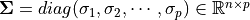
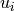
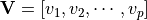

Dimension Reduction Algorithms¶
What is dimension reduction?¶
In machine learning and statistics, dimensionality reduction or dimension reduction is the process of reducing the number of random variables under consideration, via obtaining a set “uncorrelated” principle variables. It can be divided into feature selection and feature extraction. https://en.wikipedia.org/wiki/Dimensionality_reduction
Singular Value Decomposition (SVD)¶
At here, I will recall the three types of the SVD method, since some authors confused the definitions of these SVD method. SVD method is important for the the dimension reduction algorithms, such as Truncated Singular Value Decomposition (tSVD) can be used to do the dimension reduction directly, and the Full Rank Singular Value Decomposition (SVD) can be applied to do Principal Component Analysis (PCA), since PCA is a specific case of SVD.
- Full Rank Singular Value Decomposition (SVD)
Suppose
, then
System Message: WARNING/2 ( \underbracket{\bf X}_{n\times p} =\underbracket{\bf U}_{n\times n} \underbracket{\bf\Sigma}_{n\times p} \underbracket{{\bf V}^T}_{p\times p},)
latex exited with error [stdout] This is pdfTeX, Version 3.14159265-2.6-1.40.19 (TeX Live 2018) (preloaded format=latex) restricted \write18 enabled. entering extended mode (./math.tex LaTeX2e <2018-04-01> patch level 2 Babel <3.18> and hyphenation patterns for 84 language(s) loaded. (/usr/local/texlive/2018/texmf-dist/tex/latex/base/article.cls Document Class: article 2014/09/29 v1.4h Standard LaTeX document class (/usr/local/texlive/2018/texmf-dist/tex/latex/base/size12.clo)) (/usr/local/texlive/2018/texmf-dist/tex/latex/base/inputenc.sty (/usr/local/texlive/2018/texmf-dist/tex/latex/ucs/utf8x.def)) (/usr/local/texlive/2018/texmf-dist/tex/latex/ucs/ucs.sty (/usr/local/texlive/2018/texmf-dist/tex/latex/ucs/data/uni-global.def)) (/usr/local/texlive/2018/texmf-dist/tex/latex/amsmath/amsmath.sty For additional information on amsmath, use the `?' option. (/usr/local/texlive/2018/texmf-dist/tex/latex/amsmath/amstext.sty (/usr/local/texlive/2018/texmf-dist/tex/latex/amsmath/amsgen.sty)) (/usr/local/texlive/2018/texmf-dist/tex/latex/amsmath/amsbsy.sty) (/usr/local/texlive/2018/texmf-dist/tex/latex/amsmath/amsopn.sty)) (/usr/local/texlive/2018/texmf-dist/tex/latex/amscls/amsthm.sty) (/usr/local/texlive/2018/texmf-dist/tex/latex/amsfonts/amssymb.sty (/usr/local/texlive/2018/texmf-dist/tex/latex/amsfonts/amsfonts.sty)) (/usr/local/texlive/2018/texmf-dist/tex/latex/anyfontsize/anyfontsize.sty) (/usr/local/texlive/2018/texmf-dist/tex/latex/tools/bm.sty) No file math.aux. (/usr/local/texlive/2018/texmf-dist/tex/latex/ucs/ucsencs.def) (/usr/local/texlive/2018/texmf-dist/tex/latex/amsfonts/umsa.fd) (/usr/local/texlive/2018/texmf-dist/tex/latex/amsfonts/umsb.fd) ! Undefined control sequence. <argument> ...it@tag \begin {split} \underbracket {\bf X}_{n\times p} =\unde... l.14 ...bracket{{\bf V}^T}_{p\times p},\end{split} ! Undefined control sequence. <argument> ... {\bf X}_{n\times p} =\underbracket {\bf U}_{n\times n} \under... l.14 ...bracket{{\bf V}^T}_{p\times p},\end{split} ! Undefined control sequence. <argument> ...t {\bf U}_{n\times n} \underbracket {\bf \Sigma }_{n\times p} ... l.14 ...bracket{{\bf V}^T}_{p\times p},\end{split} ! Undefined control sequence. <argument> ... \Sigma }_{n\times p} \underbracket {{\bf V}^T}_{p\times p},\e... l.14 ...bracket{{\bf V}^T}_{p\times p},\end{split} ! Undefined control sequence. <argument> ...it@tag \begin {split} \underbracket {\bf X}_{n\times p} =\unde... l.14 ...bracket{{\bf V}^T}_{p\times p},\end{split} ! Undefined control sequence. <argument> ... {\bf X}_{n\times p} =\underbracket {\bf U}_{n\times n} \under... l.14 ...bracket{{\bf V}^T}_{p\times p},\end{split} ! Undefined control sequence. <argument> ...t {\bf U}_{n\times n} \underbracket {\bf \Sigma }_{n\times p} ... l.14 ...bracket{{\bf V}^T}_{p\times p},\end{split} ! Undefined control sequence. <argument> ... \Sigma }_{n\times p} \underbracket {{\bf V}^T}_{p\times p},\e... l.14 ...bracket{{\bf V}^T}_{p\times p},\end{split} [1] (./math.aux) ) (see the transcript file for additional information) Output written on math.dvi (1 page, 500 bytes). Transcript written on math.log.is called a full rank SVD of
and
– Sigular calues and 
- – left singular vectors,
and is unitary.
– right singular vectors,  and
is unitary.

Singular Value Decomposition
- Reduced Singular Value Decomposition (rSVD)
Suppose
, then
System Message: WARNING/2 ( \underbracket{\bf X}_{n\times p} =\underbracket{\bf \hat{U}}_{n\times p} \underbracket{\bf\hat{\Sigma}}_{p\times p} \underbracket{{\bf \hat{V}}^T}_{p\times p},)
latex exited with error [stdout] This is pdfTeX, Version 3.14159265-2.6-1.40.19 (TeX Live 2018) (preloaded format=latex) restricted \write18 enabled. entering extended mode (./math.tex LaTeX2e <2018-04-01> patch level 2 Babel <3.18> and hyphenation patterns for 84 language(s) loaded. (/usr/local/texlive/2018/texmf-dist/tex/latex/base/article.cls Document Class: article 2014/09/29 v1.4h Standard LaTeX document class (/usr/local/texlive/2018/texmf-dist/tex/latex/base/size12.clo)) (/usr/local/texlive/2018/texmf-dist/tex/latex/base/inputenc.sty (/usr/local/texlive/2018/texmf-dist/tex/latex/ucs/utf8x.def)) (/usr/local/texlive/2018/texmf-dist/tex/latex/ucs/ucs.sty (/usr/local/texlive/2018/texmf-dist/tex/latex/ucs/data/uni-global.def)) (/usr/local/texlive/2018/texmf-dist/tex/latex/amsmath/amsmath.sty For additional information on amsmath, use the `?' option. (/usr/local/texlive/2018/texmf-dist/tex/latex/amsmath/amstext.sty (/usr/local/texlive/2018/texmf-dist/tex/latex/amsmath/amsgen.sty)) (/usr/local/texlive/2018/texmf-dist/tex/latex/amsmath/amsbsy.sty) (/usr/local/texlive/2018/texmf-dist/tex/latex/amsmath/amsopn.sty)) (/usr/local/texlive/2018/texmf-dist/tex/latex/amscls/amsthm.sty) (/usr/local/texlive/2018/texmf-dist/tex/latex/amsfonts/amssymb.sty (/usr/local/texlive/2018/texmf-dist/tex/latex/amsfonts/amsfonts.sty)) (/usr/local/texlive/2018/texmf-dist/tex/latex/anyfontsize/anyfontsize.sty) (/usr/local/texlive/2018/texmf-dist/tex/latex/tools/bm.sty) (./math.aux) (/usr/local/texlive/2018/texmf-dist/tex/latex/ucs/ucsencs.def) (/usr/local/texlive/2018/texmf-dist/tex/latex/amsfonts/umsa.fd) (/usr/local/texlive/2018/texmf-dist/tex/latex/amsfonts/umsb.fd) ! Undefined control sequence. <argument> ...it@tag \begin {split} \underbracket {\bf X}_{n\times p} =\unde... l.14 ...t{{\bf \hat{V}}^T}_{p\times p},\end{split} ! Undefined control sequence. <argument> ... {\bf X}_{n\times p} =\underbracket {\bf \hat {U}}_{n\times p}... l.14 ...t{{\bf \hat{V}}^T}_{p\times p},\end{split} ! Undefined control sequence. <argument> ...\hat {U}}_{n\times p} \underbracket {\bf \hat {\Sigma }}_{p\ti... l.14 ...t{{\bf \hat{V}}^T}_{p\times p},\end{split} ! Undefined control sequence. <argument> ...\Sigma }}_{p\times p} \underbracket {{\bf \hat {V}}^T}_{p\time... l.14 ...t{{\bf \hat{V}}^T}_{p\times p},\end{split} ! Undefined control sequence. <argument> ...it@tag \begin {split} \underbracket {\bf X}_{n\times p} =\unde... l.14 ...t{{\bf \hat{V}}^T}_{p\times p},\end{split} ! Undefined control sequence. <argument> ... {\bf X}_{n\times p} =\underbracket {\bf \hat {U}}_{n\times p}... l.14 ...t{{\bf \hat{V}}^T}_{p\times p},\end{split} ! Undefined control sequence. <argument> ...\hat {U}}_{n\times p} \underbracket {\bf \hat {\Sigma }}_{p\ti... l.14 ...t{{\bf \hat{V}}^T}_{p\times p},\end{split} ! Undefined control sequence. <argument> ...\Sigma }}_{p\times p} \underbracket {{\bf \hat {V}}^T}_{p\time... l.14 ...t{{\bf \hat{V}}^T}_{p\times p},\end{split} [1] (./math.aux) ) (see the transcript file for additional information) Output written on math.dvi (1 page, 552 bytes). Transcript written on math.log.is called a Reduced Singular Value Decomposition rSVD of
andSystem Message: WARNING/2 ({\bX})
latex exited with error [stdout] This is pdfTeX, Version 3.14159265-2.6-1.40.19 (TeX Live 2018) (preloaded format=latex) restricted \write18 enabled. entering extended mode (./math.tex LaTeX2e <2018-04-01> patch level 2 Babel <3.18> and hyphenation patterns for 84 language(s) loaded. (/usr/local/texlive/2018/texmf-dist/tex/latex/base/article.cls Document Class: article 2014/09/29 v1.4h Standard LaTeX document class (/usr/local/texlive/2018/texmf-dist/tex/latex/base/size12.clo)) (/usr/local/texlive/2018/texmf-dist/tex/latex/base/inputenc.sty (/usr/local/texlive/2018/texmf-dist/tex/latex/ucs/utf8x.def)) (/usr/local/texlive/2018/texmf-dist/tex/latex/ucs/ucs.sty (/usr/local/texlive/2018/texmf-dist/tex/latex/ucs/data/uni-global.def)) (/usr/local/texlive/2018/texmf-dist/tex/latex/amsmath/amsmath.sty For additional information on amsmath, use the `?' option. (/usr/local/texlive/2018/texmf-dist/tex/latex/amsmath/amstext.sty (/usr/local/texlive/2018/texmf-dist/tex/latex/amsmath/amsgen.sty)) (/usr/local/texlive/2018/texmf-dist/tex/latex/amsmath/amsbsy.sty) (/usr/local/texlive/2018/texmf-dist/tex/latex/amsmath/amsopn.sty)) (/usr/local/texlive/2018/texmf-dist/tex/latex/amscls/amsthm.sty) (/usr/local/texlive/2018/texmf-dist/tex/latex/amsfonts/amssymb.sty (/usr/local/texlive/2018/texmf-dist/tex/latex/amsfonts/amsfonts.sty)) (/usr/local/texlive/2018/texmf-dist/tex/latex/anyfontsize/anyfontsize.sty) (/usr/local/texlive/2018/texmf-dist/tex/latex/tools/bm.sty) (./math.aux) (/usr/local/texlive/2018/texmf-dist/tex/latex/ucs/ucsencs.def) (/usr/local/texlive/2018/texmf-dist/tex/latex/amsfonts/umsa.fd) (/usr/local/texlive/2018/texmf-dist/tex/latex/amsfonts/umsb.fd) ! Undefined control sequence. l.13 \fontsize{12}{14}\selectfont ${\bX }$ [1] (./math.aux) ) (see the transcript file for additional information) Output written on math.dvi (1 page, 152 bytes). Transcript written on math.log.
- – left singular vectors,
is column-orthonormal matrix.
is column-orthonormal matrix.
- Truncated Singular Value Decomposition (tSVD)
Suppose
, then
System Message: WARNING/2 ( \underbracket{\bf X}_{n\times p} =\underbracket{\bf \hat{U}}_{n\times r} \underbracket{\bf\hat{\Sigma}}_{r\times r} \underbracket{{\bf \hat{V}}^T}_{r\times p},)
latex exited with error [stdout] This is pdfTeX, Version 3.14159265-2.6-1.40.19 (TeX Live 2018) (preloaded format=latex) restricted \write18 enabled. entering extended mode (./math.tex LaTeX2e <2018-04-01> patch level 2 Babel <3.18> and hyphenation patterns for 84 language(s) loaded. (/usr/local/texlive/2018/texmf-dist/tex/latex/base/article.cls Document Class: article 2014/09/29 v1.4h Standard LaTeX document class (/usr/local/texlive/2018/texmf-dist/tex/latex/base/size12.clo)) (/usr/local/texlive/2018/texmf-dist/tex/latex/base/inputenc.sty (/usr/local/texlive/2018/texmf-dist/tex/latex/ucs/utf8x.def)) (/usr/local/texlive/2018/texmf-dist/tex/latex/ucs/ucs.sty (/usr/local/texlive/2018/texmf-dist/tex/latex/ucs/data/uni-global.def)) (/usr/local/texlive/2018/texmf-dist/tex/latex/amsmath/amsmath.sty For additional information on amsmath, use the `?' option. (/usr/local/texlive/2018/texmf-dist/tex/latex/amsmath/amstext.sty (/usr/local/texlive/2018/texmf-dist/tex/latex/amsmath/amsgen.sty)) (/usr/local/texlive/2018/texmf-dist/tex/latex/amsmath/amsbsy.sty) (/usr/local/texlive/2018/texmf-dist/tex/latex/amsmath/amsopn.sty)) (/usr/local/texlive/2018/texmf-dist/tex/latex/amscls/amsthm.sty) (/usr/local/texlive/2018/texmf-dist/tex/latex/amsfonts/amssymb.sty (/usr/local/texlive/2018/texmf-dist/tex/latex/amsfonts/amsfonts.sty)) (/usr/local/texlive/2018/texmf-dist/tex/latex/anyfontsize/anyfontsize.sty) (/usr/local/texlive/2018/texmf-dist/tex/latex/tools/bm.sty) (./math.aux) (/usr/local/texlive/2018/texmf-dist/tex/latex/ucs/ucsencs.def) (/usr/local/texlive/2018/texmf-dist/tex/latex/amsfonts/umsa.fd) (/usr/local/texlive/2018/texmf-dist/tex/latex/amsfonts/umsb.fd) ! Undefined control sequence. <argument> ...it@tag \begin {split} \underbracket {\bf X}_{n\times p} =\unde... l.14 ...t{{\bf \hat{V}}^T}_{r\times p},\end{split} ! Undefined control sequence. <argument> ... {\bf X}_{n\times p} =\underbracket {\bf \hat {U}}_{n\times r}... l.14 ...t{{\bf \hat{V}}^T}_{r\times p},\end{split} ! Undefined control sequence. <argument> ...\hat {U}}_{n\times r} \underbracket {\bf \hat {\Sigma }}_{r\ti... l.14 ...t{{\bf \hat{V}}^T}_{r\times p},\end{split} ! Undefined control sequence. <argument> ...\Sigma }}_{r\times r} \underbracket {{\bf \hat {V}}^T}_{r\time... l.14 ...t{{\bf \hat{V}}^T}_{r\times p},\end{split} ! Undefined control sequence. <argument> ...it@tag \begin {split} \underbracket {\bf X}_{n\times p} =\unde... l.14 ...t{{\bf \hat{V}}^T}_{r\times p},\end{split} ! Undefined control sequence. <argument> ... {\bf X}_{n\times p} =\underbracket {\bf \hat {U}}_{n\times r}... l.14 ...t{{\bf \hat{V}}^T}_{r\times p},\end{split} ! Undefined control sequence. <argument> ...\hat {U}}_{n\times r} \underbracket {\bf \hat {\Sigma }}_{r\ti... l.14 ...t{{\bf \hat{V}}^T}_{r\times p},\end{split} ! Undefined control sequence. <argument> ...\Sigma }}_{r\times r} \underbracket {{\bf \hat {V}}^T}_{r\time... l.14 ...t{{\bf \hat{V}}^T}_{r\times p},\end{split} [1] (./math.aux) ) (see the transcript file for additional information) Output written on math.dvi (1 page, 560 bytes). Transcript written on math.log.is called a Truncated Singular Value Decomposition tSVD of
- – left singular vectors,
is column-orthonormal matrix.

Truncated Singular Value Decomposition

Figure Truncated Singular Value Decomposition indictes that the the dimension of  is smaller than . We can use this property to do the dimension reduction. But, usually, we will use SVD
to compute the Principal Components. We will learn more details in next section.
is smaller than . We can use this property to do the dimension reduction. But, usually, we will use SVD
to compute the Principal Components. We will learn more details in next section.
Principal Component Analysis (PCA)¶
Usually, there are two ways to implement the PCA. Principal Component Analysis (PCA) is a specific case of SVD.
System Message: WARNING/2 (\underbracket{\bX}_{n\times p} =\hU)
latex exited with error [stdout] This is pdfTeX, Version 3.14159265-2.6-1.40.19 (TeX Live 2018) (preloaded format=latex) restricted \write18 enabled. entering extended mode (./math.tex LaTeX2e <2018-04-01> patch level 2 Babel <3.18> and hyphenation patterns for 84 language(s) loaded. (/usr/local/texlive/2018/texmf-dist/tex/latex/base/article.cls Document Class: article 2014/09/29 v1.4h Standard LaTeX document class (/usr/local/texlive/2018/texmf-dist/tex/latex/base/size12.clo)) (/usr/local/texlive/2018/texmf-dist/tex/latex/base/inputenc.sty (/usr/local/texlive/2018/texmf-dist/tex/latex/ucs/utf8x.def)) (/usr/local/texlive/2018/texmf-dist/tex/latex/ucs/ucs.sty (/usr/local/texlive/2018/texmf-dist/tex/latex/ucs/data/uni-global.def)) (/usr/local/texlive/2018/texmf-dist/tex/latex/amsmath/amsmath.sty For additional information on amsmath, use the `?' option. (/usr/local/texlive/2018/texmf-dist/tex/latex/amsmath/amstext.sty (/usr/local/texlive/2018/texmf-dist/tex/latex/amsmath/amsgen.sty)) (/usr/local/texlive/2018/texmf-dist/tex/latex/amsmath/amsbsy.sty) (/usr/local/texlive/2018/texmf-dist/tex/latex/amsmath/amsopn.sty)) (/usr/local/texlive/2018/texmf-dist/tex/latex/amscls/amsthm.sty) (/usr/local/texlive/2018/texmf-dist/tex/latex/amsfonts/amssymb.sty (/usr/local/texlive/2018/texmf-dist/tex/latex/amsfonts/amsfonts.sty)) (/usr/local/texlive/2018/texmf-dist/tex/latex/anyfontsize/anyfontsize.sty) (/usr/local/texlive/2018/texmf-dist/tex/latex/tools/bm.sty) (./math.aux) (/usr/local/texlive/2018/texmf-dist/tex/latex/ucs/ucsencs.def) (/usr/local/texlive/2018/texmf-dist/tex/latex/amsfonts/umsa.fd) (/usr/local/texlive/2018/texmf-dist/tex/latex/amsfonts/umsb.fd) ! Undefined control sequence. <argument> \split@tag \begin {split}\underbracket {\bX }_{n\times p} =\hU \e... l.14 ...erbracket{\bX}_{n\times p} =\hU\end{split} ! Undefined control sequence. <argument> ...ag \begin {split}\underbracket {\bX }_{n\times p} =\hU \end {s... l.14 ...erbracket{\bX}_{n\times p} =\hU\end{split} ! Undefined control sequence. <argument> ...nderbracket {\bX }_{n\times p} =\hU \end {split} l.14 ...erbracket{\bX}_{n\times p} =\hU\end{split} ! Undefined control sequence. <argument> \split@tag \begin {split}\underbracket {\bX }_{n\times p} =\hU \e... l.14 ...erbracket{\bX}_{n\times p} =\hU\end{split} ! Undefined control sequence. <argument> ...ag \begin {split}\underbracket {\bX }_{n\times p} =\hU \end {s... l.14 ...erbracket{\bX}_{n\times p} =\hU\end{split} ! Undefined control sequence. <argument> ...nderbracket {\bX }_{n\times p} =\hU \end {split} l.14 ...erbracket{\bX}_{n\times p} =\hU\end{split} [1] (./math.aux) ) (see the transcript file for additional information) Output written on math.dvi (1 page, 336 bytes). Transcript written on math.log.
Independent Component Analysis (ICA)¶
Nonnegative matrix factorization (NMF)¶
TO DO……